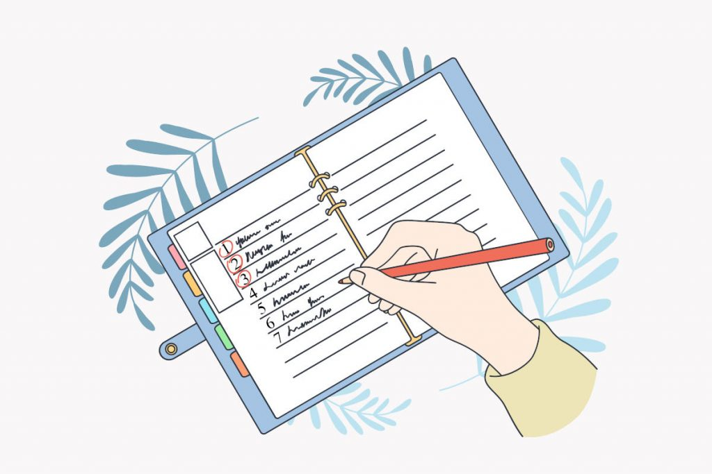

Las Carreras de Letras con Mejor Salida Laboral

Hola a todos los futuros universitarios. Sabemos que elegir una carrera puede ser un desafío. Si sientes pasión por las carreras de letras y te preocupa la salida laboral, estás…
Leer mas...
20 comentarios
Cómo Aprobar en Septiembre sin Estudiar

¡Hola jóvenes! ¿Estáis preocupados por las recuperaciones de septiembre? ¡No temáis! Estamos aquí para ayudaros a aprobar sin sacrificar todo el verano al estudio. ¿Es Posible Aprobar sin Estudiar Todo…
Leer mas...
20 comentarios
Carrera Universitaria para Estudiar Inteligencia Artificial
¡Bienvenidos a TusApuntesBonitos.com! Hoy abordaremos un tema apasionante y de creciente importancia en el mundo moderno: la Inteligencia Artificial (IA). Si te estás preguntando qué carrera universitaria debes elegir para…
Leer mas...
20 comentarios
Las 10 Carreras con Mejor Salida Laboral
¡Bienvenid@s a TusApuntesBonitos.com! Si estás buscando una carrera con excelentes perspectivas laborales, has llegado al lugar correcto. En este artículo, vamos a descubrir las diez carreras con mejor salida laboral.…
Leer mas...
20 comentarios
Apuntes de Clase: ¡Aprendiendo y Divirtiéndonos Juntos!

¡Bienvenidos a nuestro fantástico artículo sobre apuntes de clase! Aquí descubrirás cómo hacer de tus apuntes una herramienta de aprendizaje súper divertida y eficaz. Tanto si estás en 1º de…
Leer mas...
20 comentarios
Cómo tomar apuntes con Chat GPT (IA)

En el mundo académico actual, es crucial mantenerse al día con las últimas tecnologías. Una de estas es Chat GPT, una herramienta de inteligencia artificial que puede revolucionar la forma…
Leer mas...
20 comentarios
Consejos útiles para sacar el máximo provecho de tus apuntes de colegio
.jpg)
Consejos útiles para sacar el máximo provecho de tus apuntes de colegio Tomar apuntes en el colegio es una excelente manera de asegurarse de que entendemos el material del curso…
Leer mas...
20 comentarios